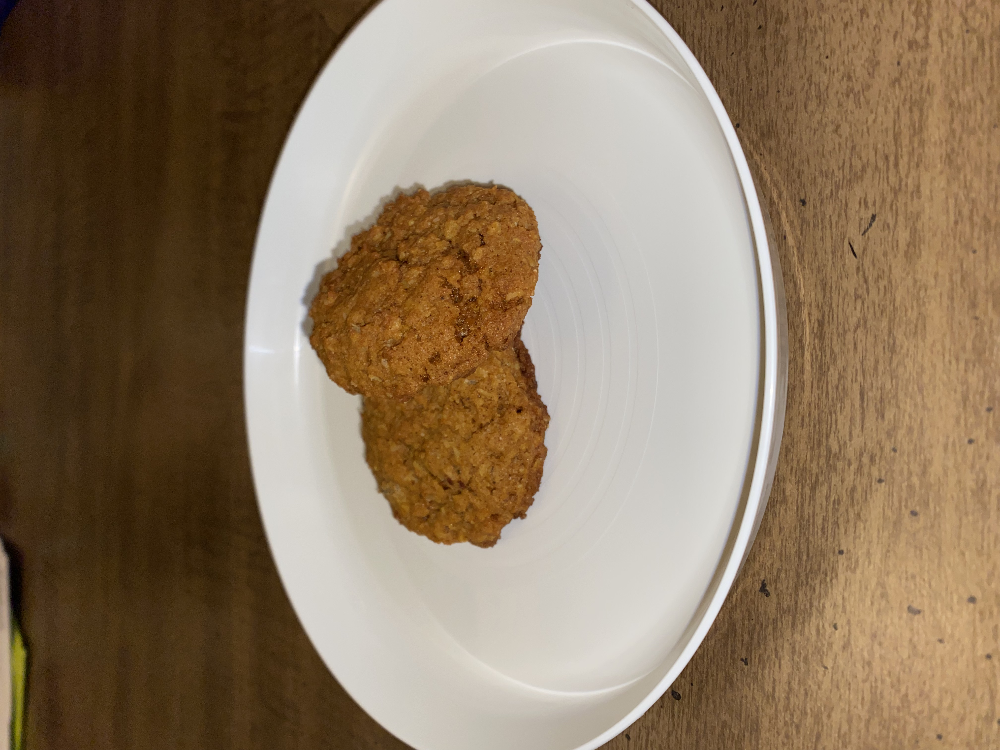

Trader Joe's Pumpkin Chocolate Chunk Oatmeal Cookies
Ingredients:
Cooking Tools Needed:
- Large Bowl
- Whisk / Spoon / Spatula
- Baking Sheet
- Cookie Scooper
- Measuring Utensils
Recipe:
- 1. Preheat oven to 350 degrees
- 2. In a large bowl combine egg, softened butter, and water
- 3. Mix together
- 4. Add cookie mix
- 5. Stir
- I have to mix dough with my hands to ensure
it is all mixed together
- 6. Scoop dough onto baking sheet with cookie
scooper
- 7. Bake for 12-15 minutes
- Depending on size of cookies, cooking time may
vary
- When edges are brown the cookies are done
- Enjoy!
